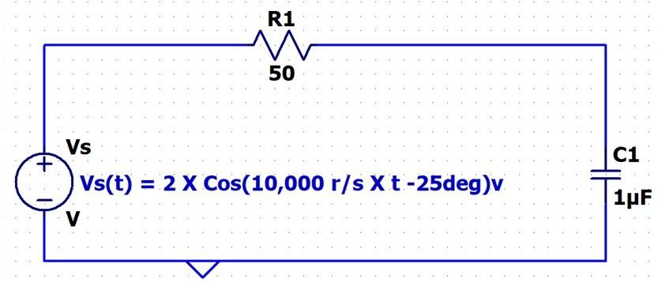
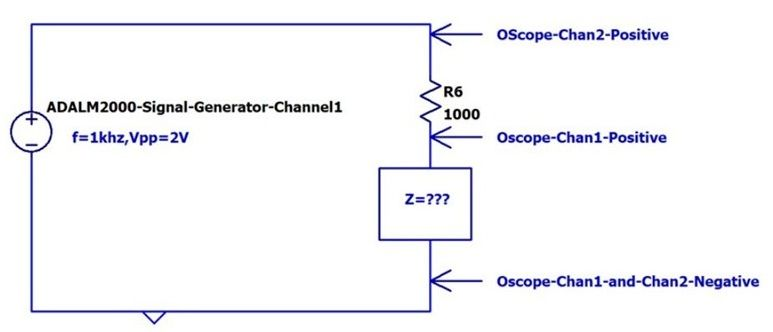
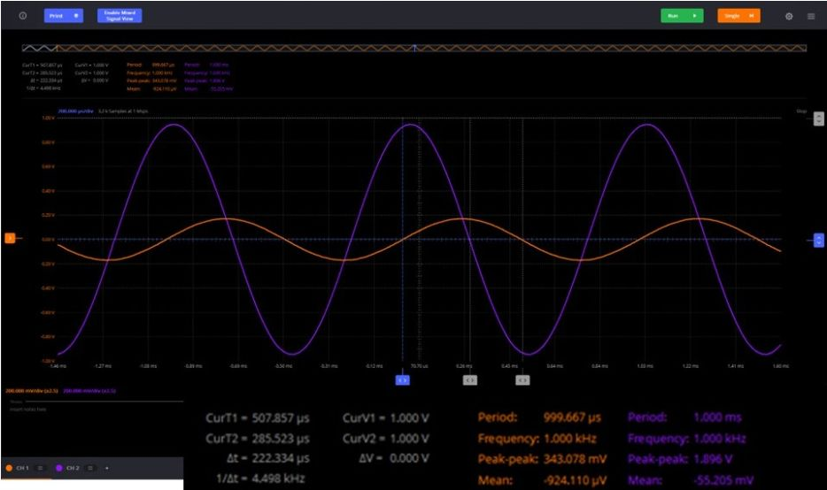

Midterm 1 原题与解析
Fall 2026 · ENGR 202
作答保存在当前浏览器。
Q1 · 串联 RC 与交流功率
30 ptsFor the following circuit (X is multiplication):
Include you formulas for each item! Full credit will be awarded for BOTH the correct formula and the correct answer.
Include your units.

1A) What is the maximum amplitude of the Source (V):
1B) What is the Peak to Peak Voltage of the Source (Vpp):
1C) What is the RMS Voltage of the Source (Vrms):
1D) What is the Frequency of the Source (Hz):
1E) What is the Period of the Source (sec):
1F) What is the phase of the Source (Radian):
1G) What is the Phasor Representation of the Impedance of the Capacitor (in Cartesian coordinates):
1H) What is the Phasor Representation of the Impedance of the Capacitor (in Polar coordinates:
1I) What is the Phasor Representation of the Source (Polar):
1J) What is the Phasor Representation of the Equivalent Impedance of the entire circuit (Cartesian):
1K) What is the Phasor Representation of the Equivalent Impedance of the entire circuit (Polar):
1L) What is the Phasor Representation of the Current through the Resistor (Polar):
1M) What is the Phasor Representation of the Current through the Capacitor (Polar):
1N) What is the time domain equation of the Current through the Resistor:
1O) What is the RMS Current through the Resistor:
1P) What is the Voltage Phasor of the Resistor (Polar):
1Q) What is the Average Power Provided by the Source to the Circuit:
1R) What is the Power Factor of the Source :
1S) What is the Average Power Dissipated in the Resistor:
1T) What is the Average Power Dissipated in the Capacitor:
查看复算答案
从 1G 的电容阻抗开始。 图上 C = 1 µF = 10⁻⁶ F。Z꜀ = 1/(j·10,000·10⁻⁶) = −j100 Ω。1G 的电容阻抗影响后面的总阻抗、电流、电阻电压和平均功率。
| 小问 | 按原图复算 |
|---|---|
| 1A | 2 V |
| 1B | 4 Vpp |
| 1C | 1.4142 V RMS |
| 1D | 1591.55 Hz |
| 1E | 0.00062832 s |
| 1F | −0.43633 rad |
| 1G | −j100 Ω |
| 1H | 100∠−90° Ω |
| 1I | 2∠−25° V |
| 1J | 50 − j100 Ω |
| 1K | 111.803∠−63.435° Ω |
| 1L | 0.017889∠38.435° A |
| 1M | 0.017889∠38.435° A |
| 1N | 0.017889 cos(10,000t + 38.435°) A |
| 1O | 0.012649 A RMS |
| 1P | 0.89443∠38.435° V |
| 1Q | 0.008 W |
| 1R | 0.44721 leading |
| 1S | 0.008 W |
| 1T | 0 W |
Q2 · 节点电压法
30 ptsYou MUST use the node voltage method to analyze the following circuit (X is multiplication). You may assume the inductor is ideal (e.g. no series resistance). Don't forget your units.

2A) Draw the Phasor Diagram of this circuit (There is a big point penalty for not having all these elements clearly on your diagram).
1) Replace the components with the values of impedance.
2) Replace the source with the appropriate phasor notation in Cartesian representation.
3) I identify the node(s) where you will perform nodal analysis. Label it/them as Va, Vb, Vc.... etc. It could be one node, it could be two nodes, it could be more; it is your decision based on the circuit.
4) At each node(s) identified in part 3. Draw the current arrows that you wish to use in your analysis. Clearly show the direction and label them i1, i2, i3, etc....)
Note: You are not required to enter any information into Canvas for 2A as it can't ingest graphics.
2B) For each node where you will perform nodal analysis as identified in your diagram (e.g. Va, Vb, etc...) state the current equation(s).
Note: You are not required to enter any information into Canvas for 2B as it can't ingest equations.
2C) Write the raw nodal equation associated with each current equation (at each node Va, Vb, Vc, etc....). Your source in the equation should be expressed as a phasor not a variable. DON'T DO ANY SIMPLIFICATION YET.
Note: You are not required to enter any information into Canvas for 2C as it can't ingest equations.
2D) Mathematically simplify the Nodal equation(s) to find the Phasor Representation of Va, or Va, Vb, Vc if there are multiple nodes. (Cartesian). You must do this by hand showing every step of your algebra. You may only use your calculator for arithmetic.
2E) Write the Steady State Time Domain Expression for Va, or Va, Vb, Vc if there are multiple nodes.
Note: You are not required to enter any information into Canvas for 2E as it can't ingest equations.
2F) Determine the Phasor for the Current in the 40 Ohm Resistor (Polar Format)
2G) Determine the Power Factor of the Source
2H) Determine the Average Power dissipated in the 80 ohm Resistor
2I) Determine the RMS Voltage of the magnitude of Va
查看复算答案
先把源节点和待求节点区分开。 已知左节点 Vₛ = 1∠35° V。在 40 Ω 电阻后的未知节点 Vₐ 写 (Vₐ − Vₛ)/40 + Vₐ/(j20) + Vₐ/80 = 0。2A–2C 按原题在纸上标出节点、三条电流箭头和原始 KCL。2E 为 vₐ(t) = 0.4 cos(1000t + 88.130°) V。
| 小问 | 按原图复算 |
|---|---|
| 2D | 0.013052 + j0.399787 V（40 Ω 后的未知节点） |
| 2F | 0.020616∠12.166° A |
| 2G | 0.92164 lagging |
| 2H | 0.001 W |
| 2I | 0.28284 V RMS |
Q3 · 三网孔方程
25 ptsYou must use the Mesh Current Method to analyze the following circuit. You may assume the inductor is ideal (e.g. no series resistance). For conventions sake, use the mesh current names and directions shown in the circuit.

3A) Draw the Phasor Diagram replacing the components and source with the appropriate phasor representations ( use Cartesian coordinates)
Note: You are not required to enter any information into Canvas for 2A as it can't ingest graphics.
3B) Write the three raw mesh equations. Don't simplify or put in Matrix format yet, but be organized.
Note: You are not required to enter any information into Canvas for 2A as it can't ingest equations.
3C) Simplify the mesh equations and express in General Matrix format (AI = V) or a set of simplified simultaneous equations. Use Cartesians coordinates. Simplify does not mean solve the matrix, just reduce each matrix component to a number.
Note: You are not required to enter any information into Canvas for 2A as it can't ingest equations.
3D) Express the current through the 30 ohm resistor in terms of the mesh currents (ia, ib, ic). YOU DON'T have to solve the matrix, just use the variable appropriately.
3E) Express the Voltage drop across the inductor in terms of the mesh currents (ia, ib, ic). YOU DON'T have to solve the matrix, just use the variables appropriately and leave indicated.
查看复算答案
先画三个顺时针网孔，保留图上的源极性。Z꜀ = −j20 Ω，Zᴸ = j50 Ω。矩阵三行依次是 [30+j50, −30, −j50]、[−30, 40−j20, 0]、[−j50, 0, 40+j50]，右侧为 [−V₁, 0, V₂]ᵀ。3D 和 3E 只需用网孔电流表示。
| 小问 | 按原图复算 |
|---|---|
| 3D | i₁ − i₂（参考方向从左到右） |
| 3E | j50(i₁ − i₃) V（上正下负） |
Q4 · 示波器与未知阻抗
8 ptsThis question is related to work you have done in the labs. A schematic of the experimental setup is shown below. It is very similar to "Lab 4: Measuring Impedance", except that the capacitor has been replaced with an element of unknown impedance. However, you know that the element consists of a single passive component (Resistor, Capacitor, or Inductor).


Your highly skilled and charming instructor has constructed the experimental setup, and provided the above O-Scope trace. As with all experimental measurements, we can't know phase in an absolute sense. However, we can know the phase relative to some reference which is all we need to fully characterize the circuit. For this reason, assume the Phase of the Source (e.g. Signal Generator) is zero degrees. Use this information to answer the following questions.
4A) Write the Voltage Phasor for the Source (Polar):
4B) Compute the Phase difference between the source and Vz (Vz is the voltage drop across the unknown impedance component Z). The source is the reference. Watch your signs!! Cursors work in graphic space and don't know anything about the signal (Degree):
4C) Write the Phasor for Vz (Polar):
4D) Is the unknown component a capacitor, resistor, or Inductor? Justify your answer!
Note: No Canvas input is required for 4D
查看复算答案
4A 需要源电压的峰值。 原图标称源为 2 Vpp，示波器 CH2 实测约 1.896 Vpp。用读数求峰值要除以 2。CH1 的 343.078 mVpp 对应约 0.17154 V 峰值。CH1 落后约 222.334 µs，一周期约 1 ms，所以相位约 −80.04°，元件为电容。
| 小问 | 按原图复算 |
|---|---|
| 4A | 0.948∠0° V（按实测 Vpp）；1∠0° V（按标称 2 Vpp） |
| 4B | 约 −80.04° |
| 4C | 0.17154∠−80.04° V |
Q5 · 等效阻抗
7 ptsReduce the following circuit to an equivalent Impedance. Show all your work clearly articulating each step in the reduction process. If you don't like to draw diagrams you can use words (e.g. 5 ohm and 3+4j in series). However, don't just put them into equations and expect me to figure out what you did by the equation. You may assume the inductor is ideal (e.g. no series resistance). Assume w = 10,000 rad/sec.

5A) Equivalent Resistance [5A]
查看复算答案
先算 Zᴸ = j·10,000·0.1 mH = j1 Ω。右支路为 2 + j1 Ω，与 4 Ω 并联，最后与 10 Ω 串联。原题开头要求等效阻抗，5A 写 Equivalent Resistance，因此同时列出复阻抗及其实部。
| 小问 | 按原图复算 |
|---|---|
| 5A | 11.4054 + j0.4324 Ω；实部为 11.4054 Ω |